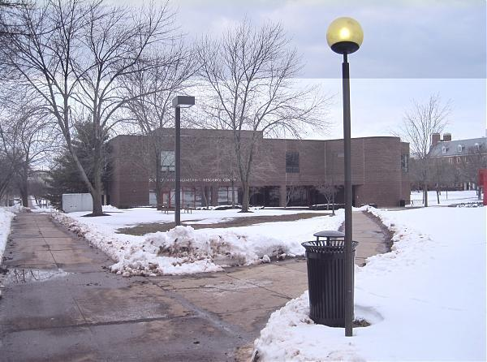
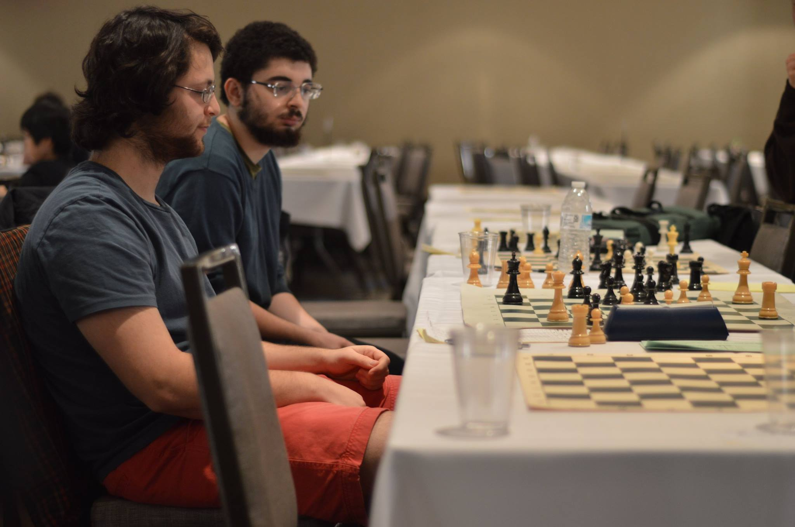

More About me

Background
I grew up in Cairo up until the eleventh grade of school with a heavy nourishment of American media. I had the chance to speak with a wide variety of people from all different types of backgrounds. The education system catered little to scientific understandings, but lavished in literature and history. I finished my 12th grade in Omaha, Nebraska, and attended Rutgers for 5 years, and have settled in Ames, IA. I attended a summer abroad program in Paris at Rutgers, and additionaly visited many European countries. I am currently pursuing a masters degree at Iowa State University.
Education
 At Rutgers, I was inclined to welcome every possible learning opportunity and digested a diverse academic education. I took 201 credits of class over the span of five years, participated in the chess, philosophy, aeronautics, and physics clubs, joined two research teams, and held multiple teaching positions. I decided on continuing studying physics, instead of the original engineering track I started, due to the noticeable difference in the appreciation of the aesthetics of math that broadened my horizons to previously inconceivable measures. I also added a french major, after finding french literature and history fascinating. I am a firm believer in Richard Muller’s philosophy of learning broad subjects during one’s undergraduate that could “trigger a life-long learning in the breadth of fields that will likely prove invaluable to [one’s] career” (Quora). I hope the Spring of 2021 to be my last semester at Iowa State University, for which I will graduate with a masters degree with the acquired skill of perseverance. At Iowa State, I had plenty of resources of high level data analysis performed by the VERITAS colloboration. My final semester will be dedicated to independent research of simulating cosmic particle acceleration under Dr. Curt Struck.
Hobbies
 I play at a class C level in chess, but I am ascertain that I will reach class A when I find the time to play more tournaments. I enjoy all sorts of games, and grew up playing many different types of them! I enjoy walking, exploring, and meeting new people and cultures. Other than the conversations, I enjoy comparing different countries through their parks. I am most impressed by parks in Milan and Amsterdam. My favorite parks in the US are central and Ada Hayden Park in New York and Ames. I enjoy finding the most productive and helpful methods of using technology, and espicially enjoy the advancements technology is having on teaching and colloborating. I choose soccer has my favorite sport as an exervise, and enjoy watching the tactics and skills of the game. My favorite reading medium has changed from novels to articles.
Personal Statement
I believe every decision and every matter warrants caution and ethical behavior. I have a firm belief in prioritizing education for the benefit of society and will strive to contribute by any means.